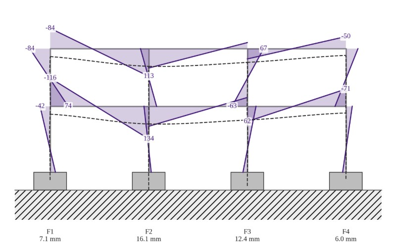
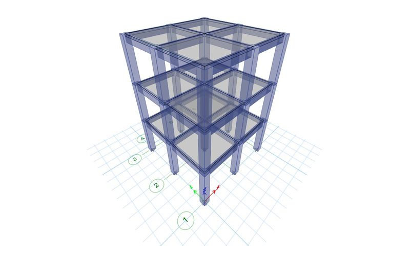
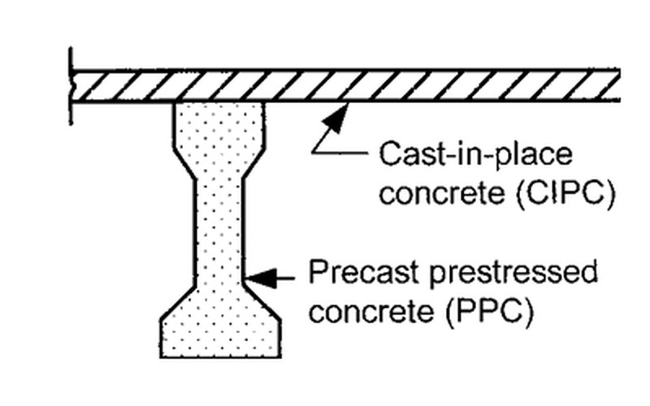
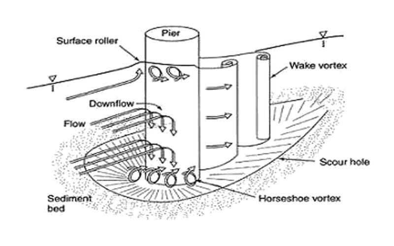
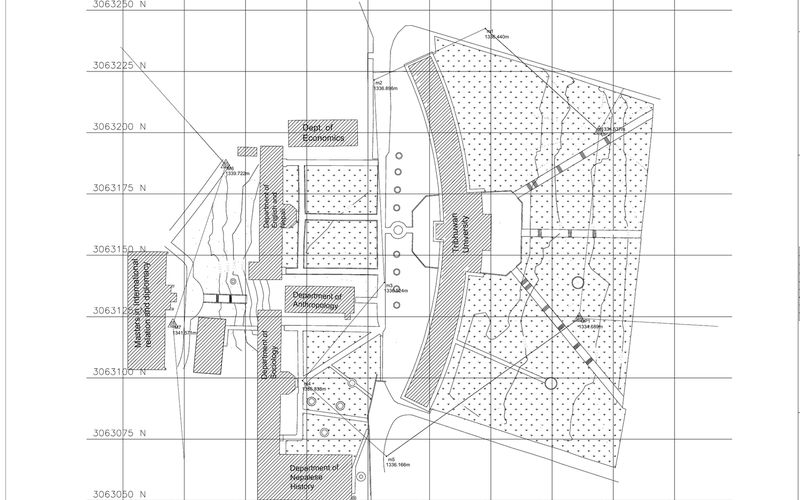

Projects
Selected academic projects from LSU and Pulchowk Campus, covering structural design, computational analysis, surveying and construction estimating. Each project describes the methods, results and my individual contribution.
Graduate (LSU)
-

Moment redistribution in building frames due to consolidation settlement of footings
I developed a Python program, with a web version, that follows how consolidation settlement of footings on clay changes the moments in a building frame over time.
-

Seismic design and pushover analysis of a 3-story RC moment frame
I designed a three-story reinforced concrete building in ETABS and evaluated the nonlinear response of a simplified frame model using pushover analysis in OpenSees.
-

Horizontal shear design of composite prestressed beams
I reviewed horizontal shear transfer in composite prestressed members and completed a worked interface shear design using ACI 318-19.
-

Dynamic analysis of an offshore platform under wind and wave loading
I developed MATLAB code to generate wind and wave loads and calculate the dynamic response of a jacket platform.
-

Sulfate ion transport in C-S-H nanopores
I used molecular dynamics simulations to investigate calcium leaching from C-S-H in sulfate solution at different temperatures and Ca/Si ratios.
-

Bridge scour monitoring and inspection review
I reviewed bridge scour monitoring methods, comparing their practical limitations and the potential of piezoelectric sensors.
Undergraduate (Tribhuvan University, Nepal)
-

Pavement response to overloaded trucks
For this group project, I developed and checked an Abaqus pavement model to study responses to wheel loading.
-

Topographic, bridge site and road alignment survey
I contributed to field surveys, traverse calculations and Civil 3D drawings for topographic mapping, a bridge site and a road alignment.
-

Residential building drawing set and cost estimate
I prepared AutoCAD drawings and detailed cost estimates for two structural options for a one-story house, along with a road estimate.